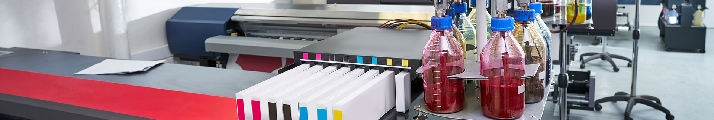

About Cyncho Garments
Cyncho is a women clothing manufacturer in China focused on OEM, ODM, sourcing, sampling and private label apparel production for overseas fashion brands.
Request Factory Quote
Factory Background
Learn about Cyncho factory capability, production experience and apparel manufacturing support.
Learn moreWomen Apparel Focus
We support women tops, dresses, jackets, knitwear, bottoms and private label collections.
Learn moreGlobal Buyer Support
Our team helps overseas brands communicate clearly from sampling to bulk production.
Learn moreWhy Fashion Brands Work With Cyncho
Cyncho focuses on women clothing manufacturing for brands that need practical communication, sample development and production follow-through. Our work is built around clear product requirements, realistic material sourcing and quality expectations that can be checked before bulk production.
For SEO and buyer clarity, Cyncho is positioned as a women clothing manufacturer in China supporting OEM apparel production, ODM development, private label clothing and custom garment manufacturing for overseas fashion companies.
Explore services ? Learn about factory process ? Women clothing manufacturing
Request Factory Quote
Send your product details, quantity and target market. Cyncho will help review the best production path.
Request Factory Quote